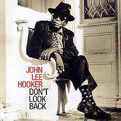

Недавно завершилось ежегодное присуждение музыкальных премий «Грэмми». Мы начинаем разговор о тех лауреатах или просто номинантах, которые показались нам наиболее интересными и яркими и которые ранее уже попадали в сферу внимания журнала. В номинации «Лучший традиционный блюзовый альбом» премию получил Джон Ли Хукер за альбом «Don't Look Back». Если вы помните, он присутствовал в CD-обзоре самого первого номера «JK». Надеемся, вам будет интересно ознакомиться с тремя различными мнениями о нем, полученными уже не от беглого знакомства, а от вдумчивого, серьезного прослушивания. Noblesse oblige.Проще, медленнее, мудрее
Джон Ли Хукер на сцене уже много-много лет, но он сегодняшний так же не похож на себя тридцатилетней давности, как довоенный биг-бэнд Эллингтона — на изысканный, почти академичный оркестр шестидесятых. Многие старики и на сцене молодятся, стараясь изо всех сил быть такими же техничными и быстрыми, и только немногие действительно великие музыканты находят для себя новый, соответствующий времени стиль. Хукер как раз из их числа. Его последний альбом, «Don't Look Back», попал прямо в «яблочко», оттеснив многочисленных виртуозов голоса и гитары, у которых все красиво, стильно и четко.
Блюз — один из немногих музыкальных стилей, для которых чувство важнее техники и душа главнее красоты. Причем буквально. Настоящий блюз совершенно невозможно спеть красивым «поставленным» голосом, он может при этом звучать превосходно, даже гениально, но просто это уже не будет блюзом. Настоящее, глубокое, но в то же время простое душевное переживание не заботится о «правильности» своего выражения. Если классический пианист, играя фугу Баха, возьмет пару раз подряд «соль» вместо «соль-диез», то это будет ужасно. Но если блюзовый исполнитель вздумает играть и петь так же строго по нотам, то это будет... нет, конечно, не ужасно — просто никак.
Хукер всегда был легко узнаваем благодаря своему неподражаемому голосу и интересной, «шершавой» гитарной технике, но то, что он играл до недавнего времени, в общем-то, легко вписывалось в рамки обычного традиционного блюза. Но две его последние работы («Chill Out» и «Don't Look Back» нужно рассматривать вместе, хотя «Грэмми» получил именно второй альбом) раскрыли другого мастера, умудренного и изменившегося.
Его пение — это разговор, исповедь человека, видевшего и пережившего достаточно много, чтобы обращать внимание на такие несущественные мелочи, как изысканность мелодии и разнообразность гармоний. Иногда начинает казаться, что его вокал живет отдельно от аккомпанемента, а голос Ван Моррисона, участвующего на равных в четырех композициях, воспринимается уже как неотрывная часть этого самого аккомпанемента. Хукер умудряется петь неспешно и задумчиво даже в быстрых вещах, спокойно, без надрыва, но с истинным чувством говоря: «I love you honey, won't you fall in love with me?» И этого достаточно: он ведь не романтический юный мечтатель, он устал от жизни, но не устал от любви и знает ее со всех сторон.
Еще одна особенность этого альбома — свободная, традиционно старинная блюзовая манера пения необыкновенно удачно сопровождается мощным электрическим звучанием оркестра. Там, где сообразно стилю ожидается просто аккомпанемент одной гитары или фортепиано, мы слышим могучий, плотный драйв, но он совершенно не забивает голос певца, а только оттеняет его и добавляет немного страсти во внешне ровное и отстраненное исполнение. То, что музыканту уже далеко за семьдесят, вовсе не значит, что он не может быть молод в душе и полон эмоций. Послушайте и убедитесь сами.
Евгений ДОЛГИХ
Воспоминания блюзового пенсионера
Я всегда очень почтительно относился к пожилым людям. Особенно к тем из них, кто сумел сохранить живость ума и желание не просто доживать, а, не обращая внимания на годы, продолжать дело, которым занимался и ранее. Я просто поражаюсь таким, как Бенни Уотэрс, который год назад отыграл получасовой сет на собственном 95-летии!
Не меньшей энергией поражает и ровесник Великого Октября Джон Ли Хукер. Последний его альбом — классное тому доказательство. То, что американские академики звукозаписи отметили его высшей наградой, не удивляет, хотя, мне думается, альбом не был самой сильной с точки зрения блюза работой года. Больше того: нельзя не почувствовать изрядной-таки коммерческой приправы в музыке альбома. На то есть объективные причины: играть сегодня городской чикагский блюз в его чистом варианте практически невозможно (если надеяться на то, что товар будет продан).
Ожидать от Джона Ли Хукера, что он вдруг заиграет нечто новое, не приходится. Вот почему он, с одной стороны, сохраняет дух своего блюза, а с другой привлек к осуществлению данного проекта такого яркого лидера, как Ван Моррисон, с которым они составили совершенно блестящую пару («The Healing Game»). Этот же дуэт, кстати, очень интересно изложил и знаменитую пьесу Джими Хендрикса «Red House».
Вообще, для постоянных поклонников Хукера данный альбом представляет собой неоценимое удовольствие. Некая медитативность в подаче блюза, манера Хукера говорить нараспев какими-то завораживающими фразами, которые сродни выступлениям проповедников, убаюкивает, втягивает в атмосферу, которая предшествует погружению в сон (например, «Rainy Day»). Кажется, сам Хукер уже как бы со стороны наблюдает за жизнью, потихоньку погружаясь в состояние дремы.
Слушается альбом хорошо, воспринимается с удовольствием. Впрочем, хотелось бы попросить Хукера о каком-то чисто эмоциональном всплеске, хотя бы время от времени, хотя бы однажды на протяжении всего альбома, но — не получается.
Здесь нелишним будет напомнить, что вообще-то играющих музыкантов в таком возрасте не так уж и много в мире. В этом смысле название альбома воспринимается уже символически: Хукер как бы и не оглядывается на прожитое, но тем не менее и не предает его. Просто делает то, что считает сегодня для себя наиболее важным. Именно невероятная искренность высказывания и способствовала столь высокой оценке альбома.
Дмитрий ПОДБЕРЕЗСКИЙ
Оптимистичный блюзовый сталкер
Среди крупнейших современных блюзменов Джон Ли Хукер в большей степени, чем кто-либо иной, заслуживает звания джазового сталкера. Год за годом, раз за разом водит он в "блюзовую зону" представителей иных музыкальных направлений, в основном рок-музыкантов. На его счету альбомы и турне с "Canned Heat" и Сантаной, "Steve Miller Band" и "The Rolling Stones".
Вот и в удостоенном "Грэмми" альбоме гостят выходец из фолк-рока Вэн Моррисон (Van Morrison) и рок-чиканос "Los Lobos". Единственная композиция с последними, "Dimples", стоит несколько в стороне от общей стилистики диска. Это сравнительно темповая, быстрая песня, где Хукер только поет в сопровождении вышеуказанного состава. В остальных десяти композициях Хукер и Моррисон и поют, и играют на гитарах под аккомпанемент клавишных, баса и ударных, а в одной вещи – и духовых, причем в сессиях участвовало несколько сменявших друг друга басистов и клавишников.
Слушая музыкантов, можно отметить очень выразительную игру на клавишных Чарльза Брауна (Charles Brown), заметно украсившего инструментальную линию "Ain't No Big Thing" и "Don't Look Back". Гитарная работа на альбоме не столь выразительна, за исключением, пожалуй, финальной "Rainy Day" и "Red House" — тут уж сам Бог велел оттенить именно эту партию, как ни как, автор этой вещи — сам Джими Хендрикс.
Главное же место на альбоме отдано вокалу. Очень интересно и поучительно сравнивать пение Моррисона и Хукера.
Моррисон стремится петь прочувствованно, со сменой высоты звука, пытается сделать блюз эффектным — результат довольно бледный, во всяком случае, на фоне его партнера. Джон Ли Хукер ни в малейшей степени не стремится приукрасить свой вокал — он поет просто, сурово. Его стариковский голос по-прежнему силен, звучит резко, абсолютно немузыкально — в классическом понимании этого слова. Иногда его вокал напоминает скрип давно несмазанной двери, и при этом именно он мощно и решительно обволакивает слушателя густым блюзовым звучанием.
Кроме "Dimples" и "I Love You Honey", все композиции сделаны в спокойном, порой даже нарочито замедленном темпе. Джон Ли Хукер словно дает нам возможность не торопясь, вдумчиво оценить каждое произносимое им слово, каждую звучащую ноту. Кстати, из 11 композиций восемь написаны самим Хукером и по одной принадлежат Вэну Моррисону, Фредди Уильямсу и уже упомянутому легендарному гитаристу.
Если выделять в альбоме "тройку призеров", то для меня она выглядит так: "Blues Before Sunrise", "Travellin' Blues", "Rainy Day". Наименее удачной показалась моррисоновская "The Healing Game".
Позволю себе сказать нечто далекое от приличествующего случаю комплиментарного тона. Мне доводилось слушать блюзовые альбомы и в большей степени цеплявшие за душу; из недавних, к примеру, — диск Джуниора Уэллса (см. CD-обзор). Альбомы, конкурировавшие с "Don't Look Back" в номинации на лучший традиционный блюзовый альбом, напротив, пока послушать не пришлось. Не думаю, однако, что члены NARAS решили присудить 80-летнему (в год издания диска) музыканту премию просто по совокупности заслуг, так сказать, к юбилею. Безусловно, это прекрасная музыка, блестяще спетая выдающимся мастером.
"Don't Look Back" ("Не оглядывайтесь назад"), — советует старик Хукер своим слушателям. Несмотря на годы, он смотрит в будущее. И он прав. Ведь прошлое, в частности, прошлое его любимой музыки, представить без Хукера просто невозможно. У Джона Ли Хукера есть все основания для оптимизма.
Леонид АУСКЕРН